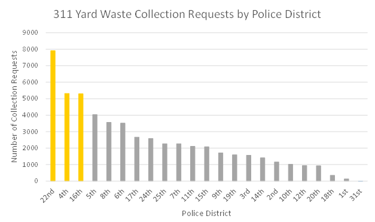
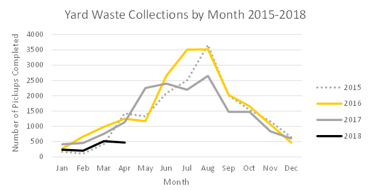
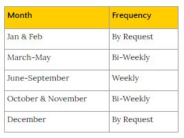
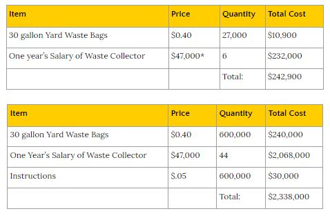

The city should require all yard waste to be put into marked brown paper bags. Many cities around the state already utilize this method in order to clearly define which bags are yard waste so that the garbage collection teams do not mistakenly take the yard waste to the landfills. Brown paper bags would be mailed to eligible Chicago Households with instructions for use, and an order form for a year of service.
During an intial pilot period, this program will be launched only in the three most requested pick-up districts, the 22nd, 4th, and 16th. Upon a successful pilot, the program will be launched in the entire city.
Adopting a paper pag system will ultimately cost a miniscule amount of the current sanitation budget for the running and maintenance of waste collection vehicles, and will assist in the reduction of harmful emissions they produce. The paper bag system is the most efficient, since it adjusts the current system without having to spend additional tax revenues.
Chicago has a few options to reach our goals of:
As opposed to redesigning the system, we propose a slight modification to the current system along with a pilot program in order to fine tune and correct all of the issues that the city has.
Currently, residents are not required to use a specific type of bag or have their yard waste bags marked. As a result, garbage collection teams pick up the yard waste by accident. We will require all yard waste to be put into marked 30-gallon brown paper bags, as many cities already do. This has successfully stopped garbage collection teams from taking yard waste to the landfills in Elgin and Naperville. Brown paper bags are already available at local hardware and grocery stores for convenience to Chicago residents.
Some residents will not want to be required to purchase brown paper bags separately. To combat this issue, as an initial promotion for the program, we will send each eligible household a promotional package. Each package will include:
The city of Chicago’s seal will be stamped on all bags in this system for convenience of the collection teams. This will make it clear as to who has opted into the bag return system. This promotion was designed to encourage eligible residents to participate by putting the necessary tools into the individual users’ hands, and at an affordable price of $15 per year.
Not only must the voluntary system and lack of effort implementing it be frustrating for residents, the huge amounts of methane gas produced by yard waste that improperly ends up in landfills contributes to the third largest source of climate change (EESI).
There are several issues with the current yard waste management system:
In 1990, the state of Illinois banned all yard waste from entering landfills to conserve landfill space, and more importantly to reduce the amount of methane gas released into the atmosphere from anaerobic decompositon of yard waste in landfills. Methane is extremely dangerous because it is twenty-five times more harmful than carbon dioxide: methane traps twenty-five times the amount of heat that carbon dioxide does, causing an exponential increase in the average global temperature (Brockway, 2012). The City of Chicago is blatantly failing to follow the State Environmental Protection Agency’s policy with the tons of yard waste that they are allowing to make it to the landfills.
A pilot program will first launchin three neighborhoods across the city:
The three neighborhoods that were selected had the highest amount of 311 requests over the past three years on each side of the city. This pilot program will demonstrate the effectiveness and efficiency of the adjusted yard waste management program. The results from this pilot program will assist in marketing a successful program to non-participating residents. It will also give quantitative data on when the right time will be to update various neighborhoods from the 311 removal request to regularly scheduled biweekly pickups.
 The pilot program is anticipated to run for a year, and then launch citywide upon success and modification with the data collected. The pilot program pickup schedule is based on 311 reqeusts, and will be adjusted based on participation and amounts collected.
To support the effectiveness of the pilot program, data will be collected on:
The data will then be analyzed to create an optimal program for citywide scope.
As supplement to the plan, we will launch our Twitter account to spread awareness of:
Educating the public will dramatically increase the participation of the program, because many simply lack understanding of the dangers of incorrectly disposed yard waste.
In one years time from the start of the pilot program, we plan to have enough reputable data to finalize the proposed pickups schedule for the rest of the city, by pinpointing trends in the pilot. By year three, we expect to have more than 50% of eligible residents participating in the program. And by year five, we expect more than 75% to be participating. We expect 99% of eligible residents to be participating after ten years.
There may be some backlash through the social media account and website. To counter the possible negative replies, we will maintain a professional posture and continue to provide educational responses that are backed by scientific fact in order to sustain our good standing as a credible and reliable source.
No new equipment or facilities will be required. The Department of Streets and Sanitation will utilize the same waste collection trucks and composting facilities. Scheduled yard waste pickups will occur on Wednesdays, when the large collection trucks are not in use. Small pickup trucks will continue to be used for the by-request pickups.
The plan requires that the Department of Streets and Sanitation hire two additional part-time employees per police district for yard waste collection. There are 22 police districts. This puts our total number of additional employees required at 44.
The total cost for the pilot program is $242,900. Since the new employees will work on incrementally scheduled pickups, their salaries are budgeted to be approximately two-thirds that of a full-time refuse collection employee.
For the whole city rollout, the total cost of the program is $2,338,000 per year. At our end goal with 99% participation we expect to get $1,800,000 in revenues from approximately 600,000 eligible households. Households will be charged $15 per year to participate in the yard waste program. $12 covers the cost of the 30 bags and $3 goes towards the cost of paying the collectors. This leaves $538,000 that would need to be added to the existing budget in order to cover the remaining salaries of new employees. Until our ultimate goal of a 99% participation rate, the city will have to make up the difference, however the cost assuming 0% participation would be only 1.33% of the current budget. The Department of Streets and Sanitation has a current budget of more than $150,000,000. With goal participation, the increased budget would only be 0.33%.
Chicago’s poor yard waste management system is a government failure and contributes immensely to global warming. Our simple and inexpensive modification requiring the use of brown paper bags will immediately reduce the harmful methane gas being produced in landfills. With a one-year pilot program launching in three well-separated neighborhoods, we plan to tune the efficiency and effectiveness of the yard waste management program to utilize tax revenues to the highest proficiency possible and reduce the exponential damage occurring to the earth.